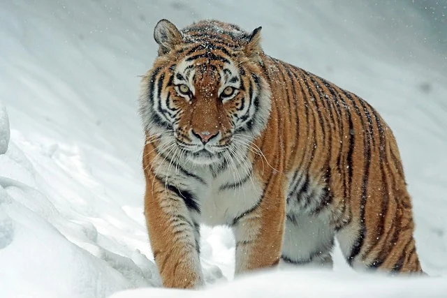

Bir aslan kükrediğinde sesi 8 kilometre öteden duyulabilir. Bir kar leoparı, kendi vücut ağırlığının üç katı avı yüzlerce metre aşağı taşıyabilir. Evcil bir kedi, köpeklere göre insan vücudunu çok daha az "köle" olarak tanımlayan bağımsız bir zihinle evrimi izler. Hepsinin ortak atası, 10-15 milyon yıl önce Asya'nın ormanlarından çıktı. Bugün 37 tür, Antarktika hariç her kıtada yaşıyor; ama bu sayı, ilk evrimsel patlamadan bu yana dramatik biçimde küçüldü. Bu yazı, kedigiller ailesinin tam hikayesini anlatıyor.
Kedigiller Ne Zaman ve Nerede Ortaya Çıktı? Eosen'den Miyosen'e Uzun Yolculuk
Kedigillerin hikayesi, memelilerin büyük patlama yaşadığı Eosen çağına (yaklaşık 55-34 milyon yıl önce) kadar uzanır. Bu dönemde "Miacidae" olarak bilinen ilk et yiyici memeli grubu, hem köpekgiller hem kedigiller hem de pek çok başka yırtıcı ailenin ortak atalarını içeriyordu. Ancak modern anlamda "kedi" yapısına sahip ilk canlılar, çok daha sonra Miyosen çağında sahneye çıktı.
Proailurus lemanensis ("ilk kedi" anlamına gelir), yaklaşık 25 milyon yıl önce Oligosen-Miyosen sınırında Avrupa'da yaşadı. Bugünkü bilinen en eski gerçek kedigil atasıdır. Vücut yapısı ağaçlarda yaşamaya uygundu; fosilleri Fransa ve Pakistan'da bulundu. Smithsonian Institution'ın Ulusal Doğa Tarihi Müzesi'ne göre Proailurus, modern kedilerin beden planını ilk kez ortaya koyan türdü — esnek omurga, dönen kol eklemi ve geri çekilebilir pençeler bu dönemde evrimleşti.
Ardından, yaklaşık 20 milyon yıl önce, büyük bir radyasyon başladı. Pseudaelurus cinsi Asya'da evrimleşerek hem Avrupa'ya hem Kuzey Amerika'ya yayıldı. Bu tür, iki büyük evrimsel dala ayrılan köprü cinstir: Bir kol modern kedigillere (Felidae), diğer kol ise en ikonik nesli tükenmiş gruba — saber-dişli kedilere (Machairodontinae) — doğru evrimleşti.
🐾 Kedigiller Ailesinin Kronolojisi — Smithsonian, Oxford University Press, IUCN 2024
- ~55 milyon yıl önce (Eosen): Miacidae — kedigillerin uzak ataları ortaya çıktı
- ~25 milyon yıl önce (Oligosen sonu): Proailurus — bilinen ilk gerçek kedigil atası, Avrupa
- ~20 milyon yıl önce (Miyosen başı): Pseudaelurus — modern kedigillerin ve saber-dişlilerin ortak atası, Asya kökenli
- ~16-11 milyon yıl önce (Orta Miyosen): Machairodontinae (saber-dişliler) ve modern Felidae'nin yolları ayrıldı
- ~10.8 milyon yıl önce: Pantherinae (büyük kediler alt ailesi) evrimleşmeye başladı — Johnson vd. 2006, Science
- ~6.7 milyon yıl önce: Puma lineajı (puma ve çita) ayrıştı
- ~3.4 milyon yıl önce: Leopar lineajı ayrıştı
- ~2.5 milyon yıl önce: Aslan ve jaguar lineajları ayrıştı
- ~2 milyon yıl önce: Smilodon — Kuzey ve Güney Amerika'nın ikonik saber-dişlisi ortaya çıktı
- ~10.000 yıl önce (Holosen başı): Saber-dişliler yok oldu; evcil kedi soyu Yakın Doğu'da ayrıştı
- Bugün: 37 yaşayan tür, 14 nesli tükenmiş cins, 3 altaile
Kedigillerin Asya'dan tüm dünyaya yayılması beş büyük dalga hâlinde gerçekleşti. Oxford University Press'ten Warren E. Johnson ve W. E. Johnson'ın 2006 tarihli Science dergisi makalesine göre tüm modern kedigillerin ortak atası yaklaşık 10-15 milyon yıl önce Asya'da yaşıyordu; oradan Beringia (bugünkü Bering Boğazı'nın oluşturmadığı kara köprüsü) üzerinden Kuzey Amerika'ya, ardından Güney Amerika'ya ve Afrika'ya yayıldılar. Avrupa ise farklı dönemlerde hem Asya'dan hem Afrika'dan yeniden kolonize edildi.
Saber-Dişli Kediler: Evrimin En İkonik Dalı
Modern kedigillerin kardeş grubu olan Machairodontinae, yaklaşık 16 milyon yıldan 10.000 yıla kadar yaşadı. İsimlerini devasa, kılıç benzeri üst köpek dişlerinden alan bu altaile, tarihte bilinen en büyük kedigilleri barındırıyordu. Türlerin çoğu Afrika, Avrupa, Asya ve Amerika'da geniş bir coğrafyaya yayılmıştı.
En tanınanları olan Smilodon fatalis, bugünkü Kuzey ve Güney Amerika'da 2,5 milyon yıldan 10.000 yıl önceye kadar yaşadı. Vücut ağırlığı 150-280 kg arasındaydı — bugünkü aslanın iki katına yakın. Üst köpek dişleri 18-22 cm uzunluğuna ulaşıyordu. Kemik yapısı avcılığa değil, devasa avı sabitleyip boğmaya uygundu; hız değil güç üzerine evrimleşmişti. La Brea zift çukurlarında (Los Angeles) 166.000'den fazla Smilodon kemiği bulundu — bu onu dünya tarihinin en zengin fosil kaydına sahip büyük memelilerinden biri yapıyor.
Saber-dişlilerin yok oluşu, büyük bir bilimsel tartışmanın konusudur. Smithsonian Magazine'in 2023 analizine göre iki ana neden öne çıkıyor: Buzul çağının sona ermesiyle birlikte büyük av hayvanlarının (mammut, dev tembel ayılar, bison) yok olması ve Homo sapiens'in bu kıtalara ulaşması. Bu iki baskının eş zamanlı gelmesi, büyük gövdeli saber-dişlilerin adaptasyon süresini aştı ve soyu tükendi.
Modern Kedigillerin Evrimi: 8 Lineaj, 37 Tür
Bugün yaşayan 37 kedigil türü, 8 evrimsel lineaj (soy hattı) içinde düzenleniyor. Bu sınıflandırma Johnson vd.'nin 2006 Science makalesi ve O'Brien ile Johnson'ın 2007 Scientific American makalesine dayanıyor; IUCN Kedigiller Uzman Grubu (Cat Specialist Group) da bu çerçeveyi kabul ediyor.
🐾 Modern Kedigillerin 8 Evrimsel Lineajı — Johnson vd. 2006, IUCN Cat SG 2025
| Lineaj Adı | Yaklaşık Ayrışma | Temsilci Türler | Tür Sayısı |
|---|---|---|---|
| Panthera lineajı | ~10.8 My | Aslan, kaplan, leopar, jaguar, kar leoparı, bulutlu leopar | 7 |
| Puma lineajı | ~6.7 My | Puma, çita, jaguarundi | 3 |
| Lynx lineajı | ~7.2 My | Vaşak (4 tür: Avrasya, Kanada, İber, kızıl vaşak) | 4 |
| Leopard cat lineajı | ~5.9 My | Leopar kedisi, balıkçı kedi, düz başlı kedi, pas lekeli kedi, Pallas kedisi | 5 |
| Ocelot lineajı | ~8.0 My | Ocelot, margay, oncilla, Güney Amerikan pampas kedisi, Andean kedi, Geoffrey's kedi | 6 |
| Bay cat lineajı | ~9.4 My | Borneo körfez kedisi, Asya altın kedisi, mermer kedi | 3 |
| Caracal lineajı | ~8.5 My | Karakulak, Afrika altın kedisi, serval | 3 |
| Felis lineajı | ~6.2 My | Evcil kedi, yaban kedisi, kum kedisi, orman kedisi, bataklık vaşağı, kara ayaklı kedi, Çin dağ kedisi | 6 |
My = Milyon yıl önce · Toplam: 37 tür
Bu 37 türün çoğu, kamuoyunun büyük bölümüne tanıdık değildir. National Geographic'e göre kedigillerin yaklaşık yüzde 80'i "küçük kedi" kategorisinde yer alır — yani aslan, kaplan, leopar ve jaguar dışındaki türler. Bunların birçoğu gece aktif, yalnız yaşayan ve insan gözünden uzak canlılardır; popülasyon verileri hâlâ yetersizdir.
Bugün Kaç Tür Var? IUCN Koruma Durumu ve Nüfus Verileri
IUCN Kırmızı Listesi (Mayıs 2025 güncellemesi) ve Cat Specialist Group (CSG) 2024-2025 değerlendirmelerine göre 37 yaşayan kedigil türünün tamamı bir tehdit kategorisinde yer alıyor ya da veri yetersizliği nedeniyle tam olarak değerlendirilememiş durumda. Hiçbir kedigil türü "Asgari Endişe (Least Concern)" kategorisinde değildir — bu gerçek, ailenin genel durumunun ne kadar kritik olduğunu ortaya koyuyor.
🌎 Tüm 37 Kedigil Türü — IUCN Kırmızı Listesi 2025, CSG Verileri, NatGeo
| Tür (Bilimsel Adı) | Yaşam Alanı | Tahmini Nüfus | IUCN Durumu |
|---|---|---|---|
| Kaplan (Panthera tigris) | Güney ve G.D. Asya, Rusya Far East | ~3.900 (yabanda) | EN TEHLİKEDE (EN) |
| Kar Leoparı (Panthera uncia) | Orta Asya dağları (Himalaya, Altay, Tiyanşan) | 2.710 – 3.386 | SAVUNMASIZ (VU) |
| Aslan (Panthera leo) | Sahraaltı Afrika, Hindistan (Gir Ormanı) | ~20.000 – 25.000 | SAVUNMASIZ (VU) |
| Jaguar (Panthera onca) | Orta ve Güney Amerika (Amazon odaklı) | ~64.000 – 173.000 | SAVUNMASIZ (VU) |
| Leopar (Panthera pardus) | Afrika (geniş), G. ve G.D. Asya | ~250.000 (azalıyor) | SAVUNMASIZ (VU) |
| Bulutlu Leopar (Neofelis nebulosa) | Himalaya eteği, Güneydoğu Asya | < 10.000 | SAVUNMASIZ (VU) |
| Sunda Bulutlu Leoparı (Neofelis diardi) | Borneo, Sumatra | < 10.000 | SAVUNMASIZ (VU) |
| Çita (Acinonyx jubatus) | Afrika savanası, küçük İran nüfusu | ~7.000 | SAVUNMASIZ (VU) |
| Puma (Puma concolor) | Kuzey ve Güney Amerika (en geniş dağılım) | ~50.000+ | EN AZ ENDİŞE (LC) |
| İber Vaşağı (Lynx pardinus) | İspanya, Portekiz (dar alan) | ~1.668 (2023, artıyor) | SAVUNMASIZ (VU) |
| Avrasya Vaşağı (Lynx lynx) | Avrupa, Orta Asya, Sibirya ormanları | ~45.000 – 50.000 | EN AZ ENDİŞE (LC) |
| Kanada Vaşağı (Lynx canadensis) | Kanada, Alaska, kuzey ABD | ~200.000 – 250.000 | EN AZ ENDİŞE (LC) |
| Kızıl Vaşak (Bobcat) (Lynx rufus) | Kuzey Amerika | ~3.500.000 | EN AZ ENDİŞE (LC) |
| Serval (Leptailurus serval) | Sahraaltı Afrika | Bilinmiyor (stabil) | EN AZ ENDİŞE (LC) |
| Karakulak (Caracal) (Caracal caracal) | Afrika, Orta Doğu, G. Asya | Bilinmiyor (stabil) | EN AZ ENDİŞE (LC) |
| Ocelot (Leopardus pardalis) | Güney ve Orta Amerika, G. Texas | ~800.000 | EN AZ ENDİŞE (LC) |
| Andean Kedi (Leopardus jacobita) | And Dağları (Peru, Bolivya, Arjantin) | ~1.400 | TEHLİKEDE (EN) |
| Balıkçı Kedi (Prionailurus viverrinus) | G. ve G.D. Asya sulak alanları | Azalıyor | SAVUNMASIZ (VU) |
| Borneo Körfez Kedisi (Catopuma badia) | Yalnızca Borneo | < 2.500 | TEHLİKEDE (EN) |
| Düz Başlı Kedi (Prionailurus planiceps) | G.D. Asya nehir havzaları | < 2.500 | TEHLİKEDE (EN) |
| Sumatran Kedisi (Prionailurus javanensis) | Sumatra, Borneo, Java, Bali | Azalıyor | SAVUNMASIZ (VU) |
| Pallas Kedisi (Manul) (Otocolobus manul) | Orta Asya çayırları ve dağları | ~58.000 | YAKINDA TEHDİT ALTINDA (NT) |
| Yaban Kedisi (Felis silvestris) | Avrupa, Orta Doğu, Orta Asya, Afrika | Yaygın, hibridizasyon sorunu var | EN AZ ENDİŞE (LC) |
| Kum Kedisi (Felis margarita) | Kuzey Afrika, Orta Doğu, Orta Asya çölleri | Bilinmiyor | EN AZ ENDİŞE (LC) |
| Çin Dağ Kedisi (Felis bieti) | Yalnızca Çin (Tibetli plato etekleri) | < 10.000 | SAVUNMASIZ (VU) |
| Kara Ayaklı Kedi (Felis nigripes) | Güney Afrika kuru savanası | < 10.000 | SAVUNMASIZ (VU) |
| Orman Kedisi (Felis chaus) | Orta Doğu, G. ve G.D. Asya, Mısır | Yaygın ama azalıyor | YAKINDA TEHDİT ALTINDA (NT) |
| Jaguarundi (Herpailurus yagouaroundi) | Güney ve Orta Amerika | Bilinmiyor | EN AZ ENDİŞE (LC) |
| Margay (Leopardus wiedii) | Orta ve G. Amerika tropik ormanları | Bilinmiyor (azalıyor) | YAKINDA TEHDİT ALTINDA (NT) |
| Oncilla (Leopardus tigrinus) | G. Amerika tropikal ve subtropikal alan | Bilinmiyor (azalıyor) | SAVUNMASIZ (VU) |
| Geoffrey's Kedi (Leopardus geoffroyi) | G. Amerika ılıman bölgeleri | Bilinmiyor (stabil) | EN AZ ENDİŞE (LC) |
| Güney Amerika Pampas Kedisi (Leopardus colocolo) | G. Amerika çayır ve ormanları | Bilinmiyor (azalıyor) | YAKINDA TEHDİT ALTINDA (NT) |
| Leopar Kedisi (Prionailurus bengalensis) | G. ve G.D. Asya | Geniş; bölgeden bölgeye değişiyor | EN AZ ENDİŞE (LC) |
| Pas Lekeli Kedi (Prionailurus rubiginosus) | Sri Lanka, Hindistan | Bilinmiyor (azalıyor) | YAKINDA TEHDİT ALTINDA (NT) |
| Afrika Altın Kedisi (Caracal aurata) | Orta Afrika tropik ormanları | Bilinmiyor (azalıyor) | SAVUNMASIZ (VU) |
| Asya Altın Kedisi (Catopuma temminckii) | Himalaya eteği, G.D. Asya | Bilinmiyor (azalıyor) | YAKINDA TEHDİT ALTINDA (NT) |
| Mermer Kedi (Pardofelis marmorata) | G.D. Asya tropik ormanları | Bilinmiyor (azalıyor) | SAVUNMASIZ (VU) |
| Evcil Kedi (Felis catus) | Dünya geneli (insan yerleşimi) | ~600 milyon (evcil + başıboş) | EHLİLEŞTİRİLMİŞ |
EN = Endangered · VU = Vulnerable · NT = Near Threatened · LC = Least Concern · Kaynak: IUCN Red List Mayıs 2025, IUCN Cat SG 2024-2025
Büyük Kedilerin Detaylı Portresi: Aslan, Kaplan, Leopar, Jaguar ve Çita
1. Aslan (Panthera leo) — Afrika Savanasının Sosyal Avcısı
Aslanlar, kedigiller ailesinin tek sosyal türüdür. "Güruh" (pride) adı verilen 4-37 bireylik gruplar hâlinde yaşarlar. IUCN'nin 2023 değerlendirmesine göre yabanda yaklaşık 20.000-25.000 aslan kaldı — 1900'deki tahmini 200.000 sayısının yalnızca yüzde 10'u. Tüm yabanda yaşayan aslanların yüzde 80'inden fazlası Sahraaltı Afrika'da bulunuyor; Asya populasyonu ise yalnızca Hindistan'ın Gir Ormanı Ulusal Parkı'nda ~650 bireyden oluşuyor.
National Geographic'e göre aslan lineajı, yaklaşık 2.5 milyon yıl önce Afrika'da evrimleşti. Mağara aslanı (Panthera spelaea) ve Amerikan aslanı (Panthera atrox) gibi nesli tükenmiş yakın akrabalarıyla birlikte Kuzey Amerika ve Avrupa'ya kadar yayıldı; buzul çağının sonunda bu populasyonlar yok oldu. Günümüzde iki alt tür kabul ediliyor: Afrika aslanı (P. l. leo) ve Asya aslanı (P. l. persica). Bir zamanlar tüm Hindistan'a yayılan Asya aslanının yaşam alanı, bugün yalnızca 1.412 km²'lik Gir Ormanı'na sıkışmış durumda.
2. Kaplan (Panthera tigris) — Geniş Yüzgeçli Yüzücü, Tehlike Altındaki Dev
Kedigiller ailesinin en büyük üyesi olan kaplan, aynı zamanda en fazla tehdit altında olan büyük kedi türüdür. WWF ve IUCN'nin 2022 global sayımına göre yabanda yaklaşık 3.900 kaplan kaldı; bu rakam 1900'deki tahmini 100.000'in yüzde dördünden azdır. Yalnızca son 100 yılda üç alt tür — Bali kaplanı (1940'lar), Hazar kaplanı (1970'ler) ve Java kaplanı (1980'ler) — tamamen yok oldu.
Bugün altı yaşayan alt tür tanınmaktadır:
| Alt Tür | Yaşam Alanı | Yabanda Tahmini Sayı (2024) | Durum |
|---|---|---|---|
| Bengal Kaplanı (P. t. tigris) | Hindistan, Bangladeş, Nepal, Bhutan | ~2.500 – 3.000 | Tehlikede (EN) |
| Amur (Sibirya) Kaplanı (P. t. altaica) | Rusya Far East, Çin kuzeydoğu sınırı | ~500 – 600 | Tehlikede (EN) |
| Sumatra Kaplanı (P. t. sumatrae) | Yalnızca Sumatra adası | ~400 – 600 | Kritik Tehlikede (CR) |
| Malayan Kaplanı (P. t. jacksoni) | Malezya Yarımadası | ~80 – 120 | Kritik Tehlikede (CR) |
| Güney Çin Kaplanı (P. t. amoyensis) | Yalnızca Çin (fonksiyonel olarak yabanda yok) | Yabanda 0 (kültür: ~100) | Kritik Tehlikede (CR) |
| Indochina Kaplanı (P. t. corbetti) | Tayland, Kamboçya, Myanmar, Vietnam | < 250 | Tehlikede (EN) |
Kaynak: WWF Global Tiger Status 2024, IUCN 2022, National Geographic
3. Leopar (Panthera pardus) — En Geniş Yaşam Alanı, Artan Tehdit
Leopar, büyük kediler arasında en geniş coğrafi dağılıma sahip türdür: Afrika'dan Orta Doğu'ya, Kafkasya'dan Uzakdoğu'ya kadar uzanır. Bu geniş dağılım, leoparı iklim değişikliğine ve habitat kaybına en dayanıklı büyük kedi gibi gösterse de IUCN verileri endişe verici bir tablo ortaya koyuyor. Leoparın tarihi yaşam alanının yüzde 75'i kaybedilmiş durumda ve toplam populasyon hızla azalıyor.
Dokuz alt türü tanınan leoparın en eleştirel tehlikedeki formu, yalnızca Uzakdoğu Rusya ve Kuzey Çin'de yaşayan Amur Leoparı (P. p. orientalis)'dır. IUCN'nin son değerlendirmesine göre yabandaki birey sayısı yalnızca ~100'dür — yeryüzündeki en ender büyük kedi.
4. Jaguar (Panthera onca) — Amerika'nın En Büyük Yırtıcısı
Kuzey ve Güney Amerika'nın en büyük yırtıcı kedisi olan jaguar, kıta tarihinde leoparla yakın akrabadır; milyonlarca yıl önce ortak bir Asya atasından ayrıştı. Amazon'dan Meksika'ya geniş bir alanda yaşıyor; ancak yaşam alanının yaklaşık yüzde 50'si son 150 yılda yok oldu. Dünyanın jaguar nüfusunun yüzde 64'ü Brezilya Amazon'unda yaşıyor. Pantera çırağının büyüsünü yansıtan su altında yüzebilme ve avlayabilme yeteneği, onu diğer büyük kedilerden ayırır.
5. Çita (Acinonyx jubatus) — Hızın Bedeli
Çita, karaların en hızlı hayvanıdır: Kısa mesafelerde 110-120 km/sa ulaşabilir. Ancak bu hız, ciddi bir bedelinin ürünüdür: Çitalar, büyük yırtıcılarla güç mücadelesini kaybetmek yerine hız üzerine evrimleşmiş; bunun sonucunda kemik yoğunluğu azalmış, pençeler yalnızca kısmen geri çekilebilir hâle gelmiş ve kısa süren bir avın ardından neredeyse 20 dakika oksijen borcu ödüyorlar. Şu an yabanda yaklaşık 7.000 çita yaşıyor. Asyalı çita (A. j. venaticus) alt türünün yabanda kalan sayısı ise yalnızca ~12 bireydir ve tümü İran'da yaşıyor — bu onu günümüzün işlevsel olarak yok olma eşiğindeki en kritik büyük kedigil alt türü yapıyor.
Kedigillerin Coğrafi Yayılımı: Hangi Kıtada Kaç Tür Var?
🌎 Kıta Bazında Kedigil Tür Dağılımı — IUCN Cat SG 2024
- Asya: 16 tür — kedigiller çeşitliliği açısından en zengin kıta; kaplan, kar leoparı, bulutlu leopar, Borneo körfez kedisi dahil
- Amerika (Kuzey + Güney): 14 tür — jaguar, puma, ocelot, margay, oncilla, vaşak ve diğer Neotropikal küçük kediler
- Afrika: 9 tür — aslan, leopar, çita, serval, karakulak, Afrika altın kedisi dahil
- Avrupa: 3 tür — Avrasya vaşağı, İber vaşağı, Avrupa yaban kedisi; aslan ve leopar tarihsel alanlarda yok oldu
- Avustralya ve Okyanusya: 0 yerli kedigil türü (yalnızca insan eliyle taşınan evcil/başıboş kediler)
- Antarktika: 0 kedigil türü
Evcil Kedinin Hikayesi: 10.000 Yıllık Ortak Yaşam
Evcil kedi (Felis catus), tüm evcil hayvanlar içinde belki de evcilleşme sürecini en az "insan yönetiminde" geçiren türdür. Köpekler 15.000-40.000 yıl önce, insan-kurt ortak avlanmasının ürünü olarak aktif bir evcilleştirme süreciyle şekillendi. Kediler ise tamamen farklı bir hikayeyi izledi.
Science ve Nature dergilerinde yayımlanan genomik araştırmalara göre evcil kedinin atası, Yakın Doğu yaban kedisi (Felis silvestris lybica)'dır. Evcilleşme süreci yaklaşık 10.000 yıl önce, modern Türkiye, Suriye, Irak ve İsrail topraklarını kapsayan "Verimli Hilal" bölgesinde başladı. Çıkış noktası, tarımın ortaya çıkmasıdır: İnsanlar tahıl depoladı; tahıl depoları kemirici çekti; kemiriciler yaban kedisi çekti. Kedi, insanları avcı olarak tercih etti; insan, varlığına tahammül etti ve zamanla bundan memnuniyet duydu.
Bu süreç, klasik anlamda bir evcilleştirme değil, karşılıklı bir yakınlaşmadır. 2017'de Nature Ecology & Evolution'da yayımlanan geniş kapsamlı genomik çalışmada araştırmacılar, 9.000 yıl öncesine ait Kıbrıs kedilerinin, bugünkü evcil kedilerle aynı genetik grupta yer aldığını ve kemirici faunasının izini takip ederek Kıbrıs'a ulaşmış olması gerektiğini ortaya koydu. Kedinin bu adaya ulaşması, ancak deniz yoluyla insan eliyle gerçekleşebilirdi; bu da evcilleşmenin 10.000 yıl öncesinden de eski olabileceğini gösteriyor.
Antik Mısır, bu süreci kültürel olarak pekiştirdi. MÖ 2000-1000 dönemine ait mezar resimleri, kedilerin Mısır hanehalkına tam anlamıyla dahil olduğunu belgeliyor. Kedi tanrıçası Bastet'e adanmış tapınaklar, binlerce mumyalanmış kedi barındırıyordu. Ticaret gemileriyle birlikte Akdeniz'e yayılan evcil kedi, Avrupa'ya ve sonunda tüm dünyaya ulaştı.
Bugün dünyada yaklaşık 373-600 milyon evcil kedi yaşıyor; kayıt dışı başıboş populasyonlar dahil edildiğinde bu rakam çok daha yüksek. Amerika Birleşik Devletleri'nde 94 milyon, Avrupa'da ~100 milyon evcil kedi olduğu tahmin ediliyor. Her yıl kedi sahipliği artmaya devam ediyor.
Nesli Tükenmiş Kedigiller: Kayıp Olanlar
Fosil kayıtlarında tanımlanan kedigil cinslerinin büyük çoğunluğu bugün artık yaşamıyor. IUCN ve Smithsonian Natural History Museum verilerine göre geçmişte bilinen en az 14 nesli tükenmiş cins ve onlarca tür mevcuttu. Bunların en dikkat çekicileri:
🧆 Önemli Nesli Tükenmiş Kedigil Türleri — Smithsonian, Paleobiology Database 2025
- Smilodon fatalis — Kuzey ve G. Amerika, 2,5 milyon–10.000 yıl önce; ağırlık ~280 kg, köpek dişi ~22 cm
- Smilodon populator — G. Amerika; kedigiller tarihinin en büyük üyelerinden, ağırlık ~400 kg tahmin ediliyor
- Homotherium latidens — Avrupa, Asya, Afrika; kılıç dişli ama Smilodon'dan farklı yapıda; son ~12.000 yıl önce
- Machairodus giganteus — Avrupa ve Asya, Miyosen-Pliyosen; bilinen en büyük saber-dişlilerden biri
- Dinofelis — Afrika, Asya, Avrupa; sabit ve kısmen keskin köpek dişli "yanlış saber-dişli"; insan atalarının muhtemel predatörü
- Mağara Aslanı (Panthera spelaea) — Avrupa ve Asya; modern aslanın 25% daha büyük akrabası; ~13.000 yıl önce yok oldu
- Amerikan Aslanı (Panthera atrox) — Kuzey ve G. Amerika; tarihsel en büyük Pantherinae üyelerinden; ~11.000 yıl önce yok oldu
- Avrupa Jaguar (Panthera gombaszoegensis) — Avrupa'da yaklaşık 2-1,5 milyon yıl önce yaşadı
- Bali Kaplanı (P. t. balica) — 1940'larda yok oldu; son bireylerin 1930'larda Bali'de vurulduğu tahmin ediliyor
- Hazar Kaplanı (P. t. virgata) — Orta Asya (İran, Türkmenistan, Kafkasya); 1970'lerde yok oldu
- Java Kaplanı (P. t. sondaica) — 1980'lerde yok oldu; son güvenilir gözlem 1970'lerde yapıldı
- Florida Panteri (Puma concolor coryi) — Teknik olarak yok olmadı; süregelen koruma programlarıyla ~200 bireylik kritik populasyon Florida'da yaşıyor
Kedigiller Neden Bu Kadar Başarılı Bir Avcıydı? Evrimsel Adaptasyonlar
Kedigillerin 10-15 milyon yıldır dünya genelinde bu kadar yaygın olmasının arkasında, birbirine kenetlenmiş birkaç temel evrimsel yenilik yatıyor. National Geographic ve Smithsonian Magazin'e göre bu adaptasyonlar şöyle sıralanıyor:
Geri çekilebilir pençeler: Çita hariç tüm kedigillerde pençeler kasılarak geri çekilir; bu hem pençeyi keskin tutar hem de sessiz yürümeyi sağlar. Evrimsel yazında bu özellik, "mükemmel avlanma aleti"nin simgesi olarak kabul edilir.
Tapetum lucidum (yansıtıcı ağ tabakası): Kedilerin gözlerinin geceleri parlamasının nedeni olan bu yapı, retinaya ulaşan ışığı iki kez kullanarak gece görüşünü insan gözünden 6-8 kat güçlü hâle getirir.
Sessiz adım: Kedigillerin ayak tabanında yastık dokusu, her adımda titreşimi söndürür. Bu, av hayvanının duymadan yaklaşan bir yırtıcının farkına varmamasını sağlar.
Esnek omurga: Kediler, koşu sırasında omurgalarını yay gibi büküp uzatarak her adımda ek itme gücü üretir. Bu yapı, kısa mesafe hızını dramatik biçimde artırır.
Uzmanlaşmış ses üretimi: Aslan, kaplan, leopar ve jaguar "kükreyebilir" ama mırlayamaz — gırtlaklarındaki özel kıkırdak yapısı bunu sağlar. Küçük kediler ise tersine mırlayabilir (hem nefes verirken hem alırken) ama kükreyemez. Çita ise ne büyük ne de küçük kedi gibi ses üretir; köpeklere özgü bir "havlama" benzeri ses çıkarır.
Bugün Ne Kadar Kedigil Türü Tehlike Altında?
IUCN Mayıs 2025 verilerine göre 37 yaşayan kedigil türünden:
- Kritik Tehlikede (CR): 2 tür — Sumatra kaplanı, Malayan kaplanı
- Tehlikede (EN): 4 tür — kaplan (tür düzeyi), Andean kedi, Borneo körfez kedisi, düz başlı kedi
- Savunmasız (VU): 14 tür — aslan, jaguar, leopar, kar leoparı, çita, bulutlu leopar, İber vaşağı, balıkçı kedi, Sunda bulutlu leoparı, Sumatran kedi, Afrika altın kedisi, mermer kedi, oncilla, kara ayaklı kedi, Çin dağ kedisi
- Yakında Tehdit Altında (NT): 5 tür — Pallas kedisi, orman kedisi, margay, G. Amerika pampas kedisi, Asya altın kedisi, pas lekeli kedi
- En Az Endişe (LC): 8 tür — puma, Avrasya vaşağı, Kanada vaşağı, kızıl vaşak, serval, karakulak, ocelot, Geoffrey's kedi, jaguarundi, yaban kedisi, kum kedisi, leopar kedisi
- Veri Yetersiz (DD) / Değerlendirilmemiş: Çeşitli küçük türler
Temel tehditler şunlar: habitat kaybı ve parçalanması (özellikle tropikal ormansızlaşma), yasa dışı avcılık ve kaçakçılık (kemik, deri, canlı ticaret), av hayvanlarının azalması, insan-yaban hayatı çatışması ve iklim değişikliği. WWF'ye göre dünya genelinde büyük kedigil popülasyonları son 50 yılda ortalama yüzde 40 azaldı.
📚 Bu Yazıda Başvurulan Kaynaklar
- IUCN Red List (Mayıs 2025). Felidae — Species assessments. iucnredlist.org
- IUCN Cat Specialist Group (2024–2025). Wild Cats: Status Survey and Conservation Action Plan. catsg.org
- Johnson, W.E. vd. (2006). The Late Miocene Radiation of Modern Felidae: A Genetic Assessment. Science, 311(5757), 73–77.
- O'Brien, S.J. & Johnson, W.E. (2007). The evolution of cats. Scientific American, 297(1), 68–75.
- Nyakatura, K. & Bininda-Emonds, O.R.P. (2012). Updating the evolutionary history of Carnivora (Mammalia): a new species-level supertree complete with divergence time estimates. BMC Biology.
- Ottoni, C. vd. (2017). The palaeogenetics of cat dispersal in the ancient world. Nature Ecology & Evolution, 1, 0139.
- National Geographic (2025). Big Cats; Wild Cat Species Guide; Lion; Tiger; Leopard; Jaguar; Cheetah. nationalgeographic.com
- National Geographic Education (2025). Felidae — Cat Family Overview. nationalgeographic.org
- Smithsonian National Museum of Natural History (2025). Cats: Wild to Tame; Proailurus; Smilodon; Machairodontinae. naturalhistory.si.edu
- Smithsonian Magazine (2023). Why Did the Saber-Toothed Cat Go Extinct? smithsonianmag.com
- WWF Global (2024). Wild Cat Population Report; Tiger Global Status 2022–2024; Big Cats. worldwildlife.org
- WWF (2022). Global Tiger Status: Estimated wild tiger population. panda.org
- Sunquist, M. & Sunquist, F. (2002). Wild Cats of the World. University of Chicago Press.
- Kitchener, A.C. vd. (2017). A revised taxonomy of the Felidae. Cat News Special Issue 11. IUCN/SSC Cat SG.
- Paleobiology Database (2025). Felidae occurrences; Machairodontinae taxonomy. paleobiodb.org
- Florida Fish and Wildlife Conservation Commission (2025). Florida Panther Recovery Program.
- Türkiye & Çevre: Karakulak (Caracal caracal) ve Vaşak (Lynx lynx) Türkiye'de kayıtlı kedigil türleridir. Doğa Koruma ve Milli Parklar Genel Müdürlüğü, 2024.
Sonuç: Evrimin Mühendisleri, Korumacılığın Sembolü
Kedigiller, 10-15 milyon yıllık bir evrimsel ustalaşmanın ürünüdür. Proailurus'un Oligosen ormanlarından bugünkü Bengal kaplanı'nın Bengal deltasına, Smilodon'un La Brea zift çukurlarından İber vaşağının İspanya koruma alanlarına uzanan bu çizgi; evrimsel biyolojinin, paleontolojinin ve koruma biliminin en zengin kesişim noktalarından birini oluşturuyor.
Ama rakamlar çarpıcı bir gerçeği gözler önüne seriyor: 37 yaşayan türün neredeyse tamamı tehdit altında. Yüz yıl önce 100.000 olan kaplan sayısı, bugün 3.900'e düştü. Aslan, 50 yıl önce 200.000 iken şimdi 20.000-25.000 kaldı. Çita, İran'da 12 bireylik işlevsel bir son nüfusla tutunmaya çalışıyor. Bu kayıplar yalnızca biyolojik değil; milyonlarca yıllık evrimin birer sonucu olan bu türlerle birlikte ekosistemlerin işleyişi, av-avcı dengeleri ve genetik çeşitlilik de kaybediliyor.
İber vaşağı örneği ise umut taşıyor: 2002'de yalnızca ~94 bireyle neslin eşiğinden dönen bu tür, 2023'te ~1.668 bireye ulaştı — son 20 yılın en büyük büyük kedi koruma başarısı olarak kayıtlara geçti. Bu örnek, politika iradesi, habitat restorasyonu ve bilimsel izlemenin birleşimi olduğunda neyin mümkün olduğunu net biçimde ortaya koyuyor. Kedigillerin geri kalanları için de bu pencere hâlâ açık — ama kapanıyor.